탭 여섯 개, 병목은 나였어요
발표자는 퇴근 전에 돌아가는 에이전트를 세어 보니 11개였다고 해요. 한 프로젝트에 다섯 개, 다른 프로젝트에 두 개, 나머지는 사이드 프로젝트예요. 문제는 어느 에이전트가 자기를 기다리는지 한눈에 알 수 없다는 점이었어요. 탭을 옮겨 다니는 사이 막힌 에이전트는 20~30분씩 그대로 서 있었죠. 에이전트를 많이 돌릴수록 병목은 사람이라는 게 더 분명해졌다고 해요.
그래서 소개하는 도구가 herdr예요. 발표자 설명으로는 올여름 GitHub 트렌딩 1위를 찍었고, 스타는 3만 4천 개쯤이며, 8월에 YC 투자를 받았어요.
터미널 멀티플렉서가 하는 세 가지 일
터미널 멀티플렉서는 세 가지 일을 해요. 터미널 하나를 여러 창(pane)으로 쪼개고, 창을 탭으로, 탭을 세션으로 묶어요. 그리고 가장 중요한 세 번째, 터미널을 닫아도 세션이 계속 돌아가요. 앞의 두 가지는 요즘 터미널 앱도 다 해 주니, 멀티플렉서의 진짜 가치는 세 번째예요.
일반 터미널에서 claude나 npm run dev를 돌리다 창을 닫으면 프로세스도 같이 죽어요. 멀티플렉서 안에서 돌렸다면 창은 닫혀도 프로세스는 뒤에서 계속 돌아요. 프로세스를 쥐고 있는 게 터미널 앱이 아니라 뒤에서 도는 서버이기 때문이에요.
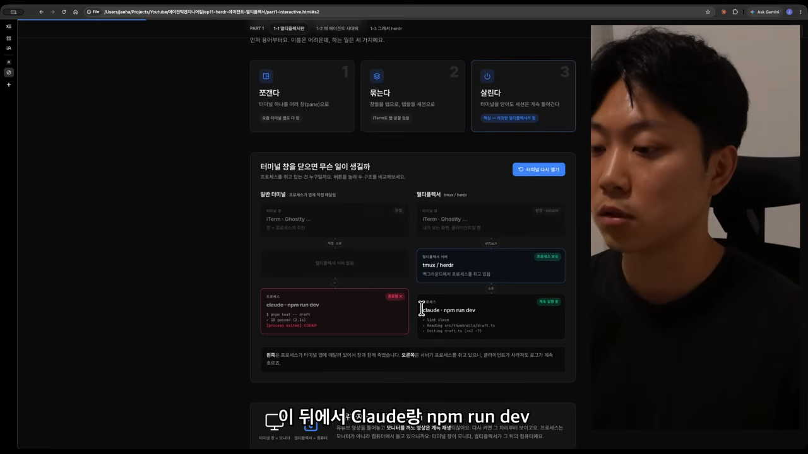
발표자는 이걸 모니터와 컴퓨터에 빗대요. 모니터를 꺼도 유튜브 영상은 컴퓨터에서 계속 재생되죠. 터미널 창이 모니터고, 멀티플렉서 서버가 컴퓨터예요. 가장 널리 쓰이는 멀티플렉서는 2007년에 나온 tmux예요. 원래는 서버 관리자가 SSH 연결이 끊겨도 작업을 이어 가려고 쓰던 도구였어요.
에이전트 시대에 tmux가 다시 뜬 이유
예전에는 개발자 한 명이 돌리는 프로세스가 손으로 타이핑하는 시간과 거의 같았어요. 내가 일할 때만 뭔가 돌았으니 탭이 많이 필요 없었죠. 발표자 팀에도 tmux를 즐겨 쓰는 사람은 없었대요.
지금은 지시 한 번이면 Claude가 10분, 20분, 30분씩 혼자 일해요. 그사이 두 번째 지시를 내리고, Codex에게 리뷰도 시켜요. 사람이 안 보는 동안 오래 도는 프로세스가 여러 개 생긴 거예요. 이 프로세스들은 터미널을 끄거나 노트북을 덮어도 죽으면 안 돼요.
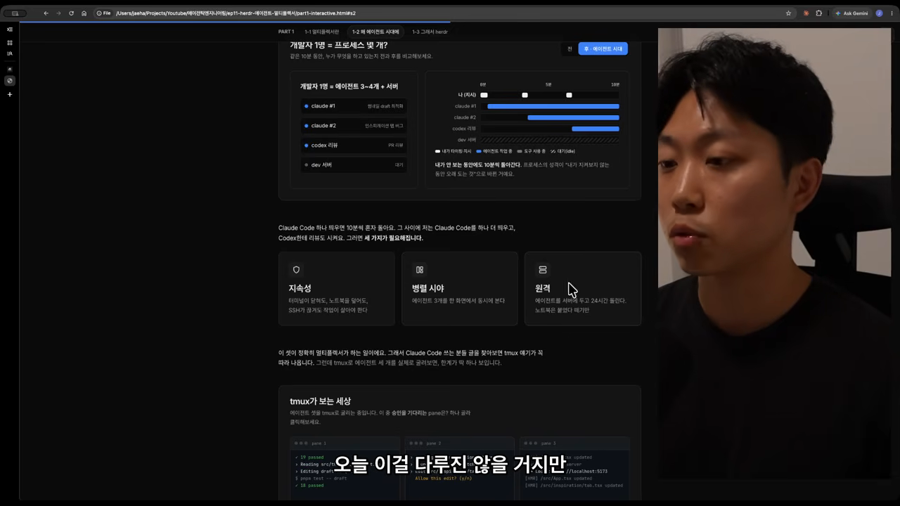
| 필요한 것 | 뜻 |
|---|---|
| 지속성 | 터미널이 닫히거나 노트북을 덮거나 SSH가 끊겨도 작업이 계속 돌아요 |
| 병렬 시야 | 에이전트 여러 개를 한 화면에서 관리해요 |
| 원격 | 서버에 에이전트를 두고 24시간 돌려요 |
발표자는 회사에서 로컬 대신 서버를 여러 대 빌려, 각 서버에서 에이전트를 네다섯 개씩 돌린다고 해요. 이 세 가지가 정확히 멀티플렉서가 하는 일이에요. 그래서 Claude Code나 Codex 사용자의 글을 찾아보면 tmux 얘기가 꼭 따라 나와요.
tmux의 한계
그런데 tmux로 에이전트를 여럿 돌려 보면 한계가 하나 보여요. "이 중 승인을 기다리는 pane은 어디일까요?"라고 물으면, 결국 pane의 글자를 전부 읽어서 알아내야 해요. tmux는 에이전트가 작업 중인지, 승인을 기다리는지, 에러로 멈췄는지 구분해 주지 않아요. 글자를 보여 줄 뿐이에요. 그래서 멀티플렉서를 써도 탭을 돌며 확인하는 병목은 여전히 사람이에요.
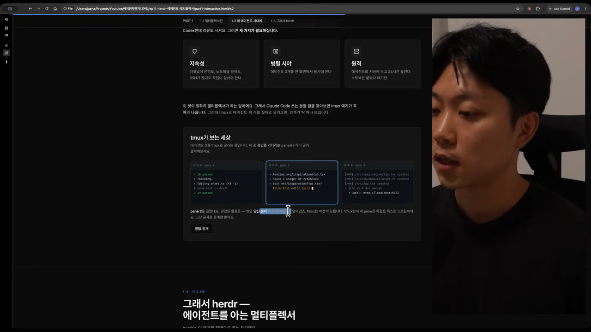
herdr는 tmux와 무엇이 다를까요
herdr의 공식 표현은 '코딩 에이전트가 사는 런타임'이에요. 발표자 식으로 풀면 '에이전트 상태를 아는 tmux'예요.
tmux에서 가져온 건 그대로예요. 서버-클라이언트 구조라서 지속성, 병렬 시야, 원격을 다 갖고 있어요. 프리픽스 키까지 같아서 tmux에 익숙하면 바로 쓸 수 있어요. 발표자도 그렇게 바로 넘어왔대요.
다른 점은 에이전트 상태를 안다는 거예요. herdr를 켜면 왼쪽에 사이드바가 생기고, pane마다 Claude인지 Codex인지, 작업 중인지 막혔는지 끝났는지 표시돼요. 에이전트가 아니라 그냥 터미널이면 터미널이라고 나와요. 어떤 에이전트가 내 주의를 필요로 하는지 보고 바로 풀어 줄 수 있어요.
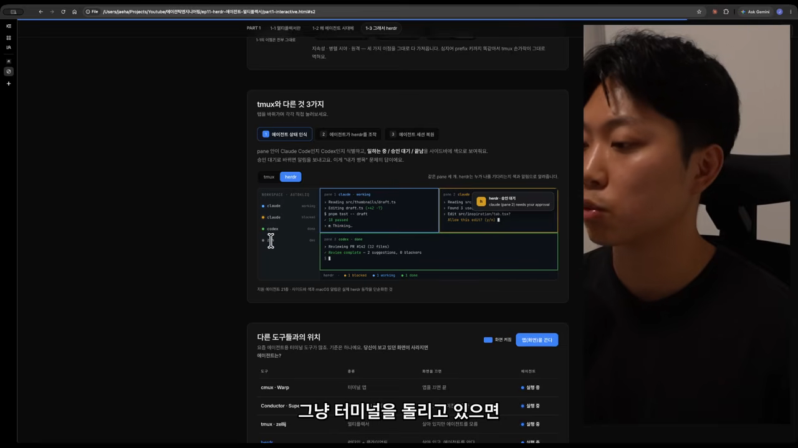
다른 도구들과 어디가 다를까요
요즘 에이전트용 터미널 도구가 많아서 발표자도 처음엔 헷갈렸대요. 그래서 '보고 있던 화면을 끄면 에이전트가 어떻게 되나'를 기준으로 정리해요.
| 도구 | 종류 | 화면을 끄면 |
|---|---|---|
| cmux · Warp | 터미널 앱 | 앱을 끄면 끝나요 |
| Conductor · Superset | 에이전트 매니저 앱 | 앱을 끄면 에이전트도 끝나요 |
| tmux · zellij | 멀티플렉서 | 살아 있지만 에이전트를 몰라요 |
| herdr | 런타임 + 클라이언트 | 살아 있고, 에이전트도 알아요 |
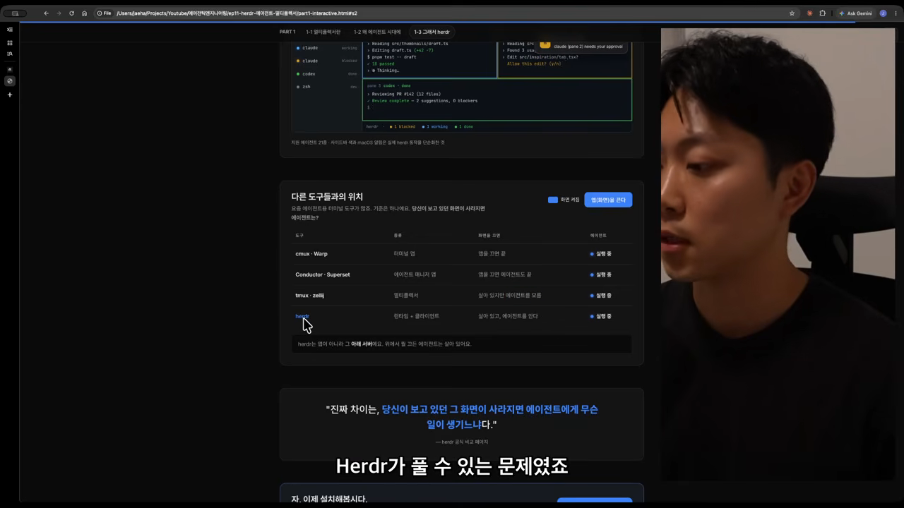
설치와 화면 구조
설치는 간단해요. herdr.dev 첫 화면의 설치 명령을 복사해 붙이면 돼요. macOS, Linux, Windows를 지원해요. 발표자는 설치 명령을 Claude에게 붙여 넣어 설치했어요.
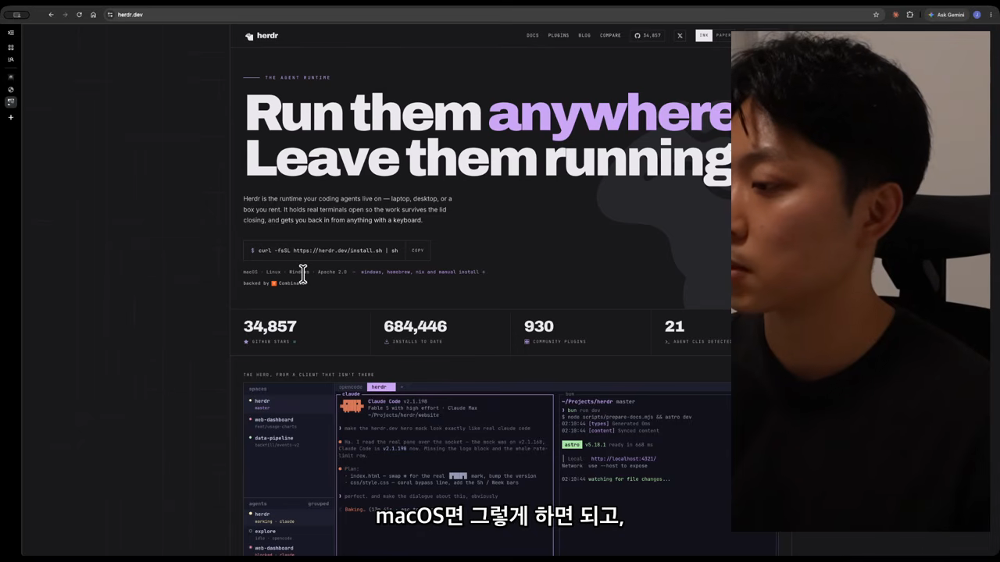
공식 사이트에는 에이전트 스킬 파일도 있어요. 에이전트가 herdr를 잘 쓰도록 만든 스킬이에요. 이걸 Claude에 설치해 두면 Claude가 스스로 pane을 만들고 다른 에이전트를 부리기 시작해요. 이 장면은 뒤의 데모에서 나와요.

세션, 스페이스, 탭, pane
터미널에서 herdr를 치면 하던 작업이 그대로 다시 나와요. 터미널을 껐어도 herdr 서버에서 계속 돌고 있었기 때문이에요. herdr session attach <이름>으로 세션을 따로 만들 수도 있어요. 일과 사이드 프로젝트를 다른 세션에 나눠 둘 수 있죠. 다만 발표자는 귀찮아서 기본 세션 하나에 다 둔대요. 세션이라는 개념이 있다는 것만 알면 돼요.
화면은 왼쪽 위 스페이스(워크스페이스), 왼쪽 아래 에이전트 목록, 오른쪽 메인 pane으로 나뉘어요. tmux는 마우스를 기본으로 지원하지 않아서 단축키부터 배워야 하는데, herdr는 마우스로 다 돼요. 클릭으로 새 스페이스를 만들고 이름을 바꿀 수 있어요. 스페이스 안에서 Claude를 띄우면 에이전트 목록에 바로 나타나요. 리뷰용 탭을 따로 만들어 거기서 다른 에이전트를 돌릴 수도 있어요.
사이드바 상태와 꺼지지 않는 세션
에이전트 상태는 색으로 구분돼요. 발표자가 데모에서 설명한 색은 이래요.
| 색 | 뜻 |
|---|---|
| 노란색 | 작업 중이에요 |
| 꽉 찬 초록색 | 끝났는데 아직 안 읽었어요 |
| 속이 빈 초록색 | 끝났고 읽었어요(쉬는 중) |
| 빨간색 | blocked, 내 승인을 기다려요 |
pane은 오른쪽이나 아래로 쪼갤 수 있어요. 네 칸으로 나눠 Claude, Codex, Pi 같은 다른 에이전트를 함께 돌려도 각각 이름이 표시돼요. 스페이스 안 에이전트 하나라도 노란색이면 스페이스도 노란색이 돼요. 그래서 어느 프로젝트가 아직 일하는 중이고 어느 쪽이 쉬는 중인지 한눈에 보여요.
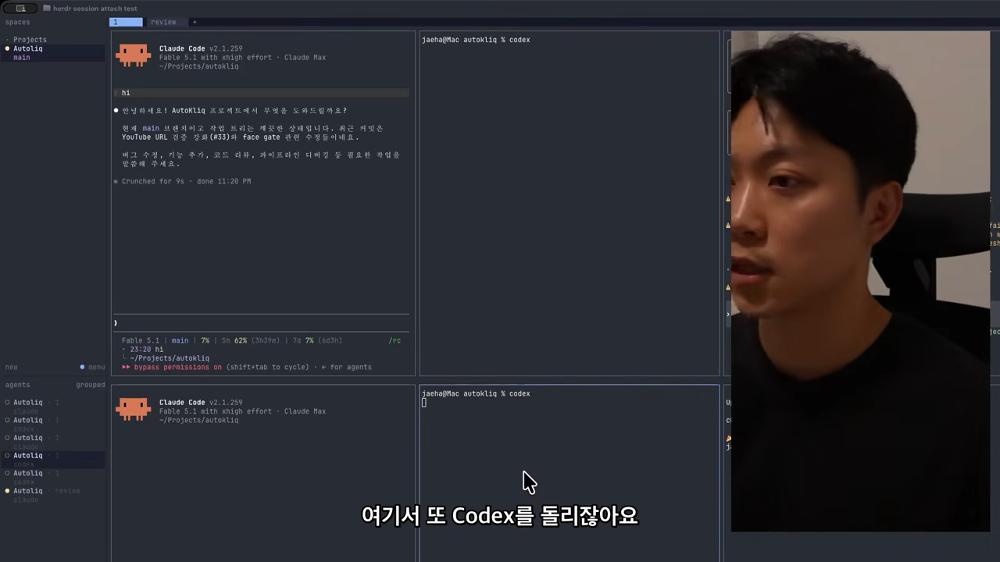
단축키와 설정
단축키는 tmux처럼 Ctrl+B를 먼저 누르는 프리픽스 방식이에요. 화면 아래에 'prefix'가 뜨면 명령을 받을 준비가 된 거예요. 여기서 ?를 누르면 단축키 목록, s를 누르면 설정이 열려요. 마우스로도 다 되니 단축키는 필요할 때 하나씩 외우면 돼요.
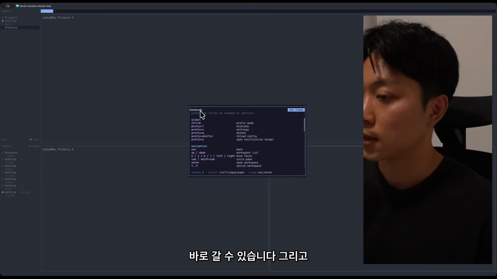
설정에서는 테마, 소리 알림, 토스트 알림, 연동을 바꿀 수 있어요. 에이전트가 끝나면 알림이 오니 소리는 켜 두길 권해요. 발표자 화면에는 Claude와 Codex 연동만 켜져 있었고, 다른 에이전트는 따로 연동하면 된대요.
터미널을 닫았다가 다시 붙기
마지막으로 터미널을 완전히 닫았다가 아까 세션에 다시 붙어요. 리뷰를 시켜 둔 에이전트가 그대로 계속 돌고 있어요. 이게 지속성이에요.
오케스트레이터가 pane을 직접 만들어요
3부는 발표자가 함께 만들고 있는 썸네일 생성 서비스 AutoKliq를 실제로 고치는 데모예요. 이 서비스는 썸네일을 바로 만들지 않고 시안(concept proposal)을 먼저 보여 줘요. 한 번에 다 넣고 돌리면 블랙박스처럼 결과만 나오고 크레딧만 빠지니까, 마음에 드는 시안을 골랐을 때만 크레딧을 쓰게 바꾼 거예요.
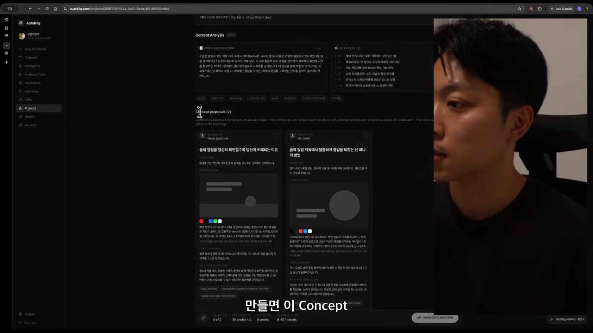
오늘 할 일은 세 가지예요.
- 시안 생성 단계를 프로파일링해서 가장 느린 구간을 찾고, 품질은 지키면서 시간을 줄이기
- Inspirations 탭이 로딩되지 않는 버그 고치기
- 시안 섹션을 더 쓰기 편하게 만들 아이디어 브레인스토밍
메인 에이전트가 일을 나눠 줘요
세 작업은 영역이 겹치지 않아요. 발표자는 메인 Claude Code에게 세 작업을 설명하고 "pane별로 띄워서 나한테 보고해"라고만 말해요. Claude는 herdr 스킬을 불러와 pane 세 개를 만들고, 각 pane에 Claude를 bypassPermissions 모드로 띄워요. 그 모드를 쓰라고 한 적은 없는데 알아서 그렇게 했대요.
그다음 작업마다 브리프 파일을 만들어 두고, 각 에이전트에게 "다음 브리프를 읽고 전부 실행해라"라는 프롬프트를 보내요. 일종의 핸드오프예요. 메인 에이전트가 오케스트레이터가 되어 나머지 세 에이전트를 부리기 시작한 거예요. 발표자는 이게 진짜 에이전트 오케스트레이션이라고 느꼈다고 해요.
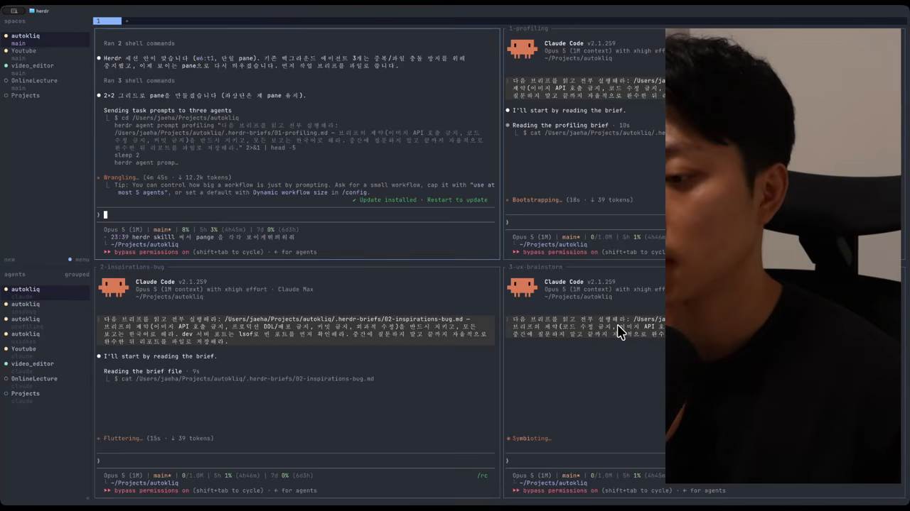
사람의 역할은 검증이에요
물론 백그라운드 프로세스로 돌리면 pane을 볼 필요도 없어요. 그런데도 pane으로 띄우는 건 중간에 사람이 끼어들 수 있어서예요. 버그 수정 방향이 틀렸거나, 브레인스토밍 중에 바로 구현하고 싶어지면 그 pane으로 가서 세션을 직접 넘겨받으면 돼요.
메인 오케스트레이터는 현재 레이아웃까지 보고해요. pane마다 w6:p5 같은 ID가 있고, 에이전트끼리 이 ID와 소켓 API로 서로를 조종해요. 사람은 평소엔 메인 오케스트레이터만 보다가, 손을 더 대고 싶을 때만 해당 pane에 들어가면 돼요.
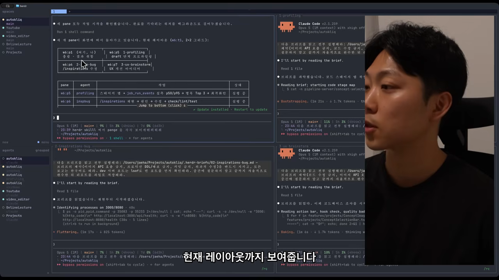
사람은 검증을 맡아요
Codex 리뷰도 보통은 서브에이전트로 돌아서 결과만 받게 돼요. pane으로 띄우면 리뷰가 어떻게 진행되는지 볼 수 있어요. 최적화처럼 여러 기법을 동시에 시도할 때도 좋아요. 런타임을 10% 줄이려고 실험 네 개를 돌린다면, 네 개를 백그라운드에 맡기는 대신 pane으로 보면서 진행할 수 있어요.
이게 중요한 이유는 최적화 결과를 믿기 어려울 때가 많아서예요. 발표자는 사람의 역할이 거의 검증으로 넘어갔다고 봐요.
이 사람의 역할은 검증의 역할로 저는 거의 다 넘어갔다고 생각하거든요.
— 영상 29:02
회사의 마이그레이션 프로젝트에서는 서브에이전트를 20~30개씩 돌린대요. 그걸 다 pane으로 볼 수는 없으니 열 개 정도만 띄워 하나씩 봐요. 가설이 틀렸으면 왜 틀렸는지, 맞았으면 어떻게 고칠지 확인하고, 오늘 당장 고칠 것만 골라 그 pane의 에이전트와 직접 대화해요. 그 사이 메인 오케스트레이터에서는 전체 그림을 봐요. 예를 들어 'A, B, C는 잘 되고 나머지 일곱 개는 이런 이유로 실패 중' 같은 식이에요.
메인 오케스트레이터는 하루 동안의 정보를 다 갖고 있어서 종합 보고서를 만들 수 있어요. 팀원이 진행 상황을 물으면 그 보고서를 공유하거나, 오케스트레이터에게 직접 보내 달라고 할 수도 있어요. 발표자는 이렇게 오케스트레이터를 두고 일을 관리하는 법에 익숙해져야 한다고 말해요.
결과를 모아 PR로, 그리고 에이전트를 위한 도구들
작업이 끝나자 발표자는 메인 오케스트레이터에게 정리를 부탁해요. 세 pane 모두 끝나서 초록색이에요. 버그는 고쳤고, 프로파일링은 분석까지만 하고 코드는 아직 안 바꿨고, UI 개선 아이디어도 받았어요. 오케스트레이터는 커밋할지, 최적화를 구현할지, 3번에서 착수할 게 있는지 골라 달라고 물어요.
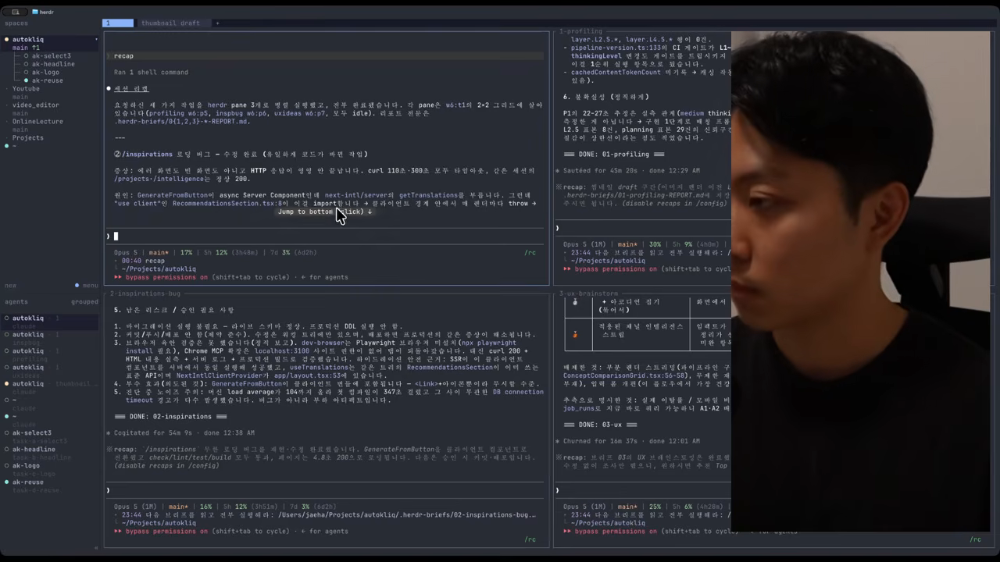
발표자는 늘 하던 대로 "PR 만들기 전에 Codex 리뷰 한 번 돌려 줘"라고 해요. 다른 스페이스에서 돌린 작업 네 개도 몇 군데 고쳐 달라고 한 뒤 검증 통과를 확인하고, PR 하나로 합쳐 달라고 해요. 이날 AutoKliq에는 오케스트레이터 두 개가 서브에이전트를 서너 개씩 만들어, 모두 일곱 개쯤의 에이전트가 붙었어요.
마무리 — 에이전트를 위한 도구들
정리하면 터미널 멀티플렉서는 '터미널을 닫아도 프로세스를 살려 두는 서버'예요. 덕분에 에이전트가 몇 시간씩 혼자 돌 수 있어요. 발표자는 자기 전에 일을 걸어 두고, 아침에 만들어진 PR을 리뷰해요. 출근길 지하철을 타거나 운전하기 전에도 몇 개 돌려 두면, 30~40분 뒤 회사에 도착할 즈음 PR이 생겨 있어요. 에이전트가 늘 나를 위해 일하는 상태가 기본이 될 거고, 그 바탕이 멀티플렉서라고 봐요.
도구들도 에이전트 중심으로 다시 만들어지고 있어요. herdr는 tmux의 에이전트 버전이고, Orca는 에이전트를 위한 개발 환경(ADE), Aside는 에이전트를 위한 브라우저예요. 발표자는 Aside로 썸네일 생성 자동화도 해 봤는데 잘 됐다고 해요.